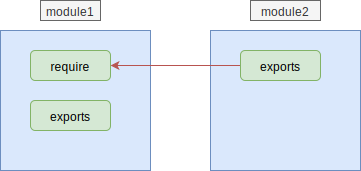
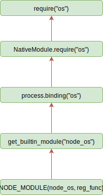

03.1-使用机制-模块机制
一 模块简介
在项目开发中，对不同的项目功能需要做文件切割，以更好的产出可维护性代码，对分割后的不同功能代码的引入便需要编程需要编程语言的模块机制支持。
模块化的优势有：
- 防止命名冲突
- 代码复用
- 提升可维护性
JavaScript 由于诞生之初只是一个浏览器脚本语言，并未支持大型项目要求的模块化需求。
为了适应现在的发展，JavaScript 先后诞生了各种模块规范，如 AMD、CMD：
- CommonJS：主张文件即模块，通过
module.exports导出接口，通过require()加载模块，被 Node.js 采用。 - AMD：一种异步加载模块的实现规范，提倡依赖前置，提前加载（函数运行前加载好依赖），Require.js 是其代表，目前已经逐渐淘汰。
- CMD：一种异步加载模块的实现规范，提倡依赖就近，按需加载（函数运行时才加载依赖），sea.js 是其代表，目前已经逐渐淘汰。
- ES Module：目前 ECMAScript 官方的方案
目前的主流模块化方案是：CommonJS、ES Module。但是 CommonJS 的文件加载是同步的，由于服务端的文件都位于服务器的本地磁盘中，所以 Node 采用该方式没有太大问题，但是该方式不适合前端中需要网络来加载远程模块！而 Node 现在也是 JavaScript 社区的一部分，也需要跟进 JavaScript 的更新，所以 ES Module 最后将会成为 JavaScript 最主要的模块化方案，没有之一。
二 CommonJS
2.1 CommonJS 规范
CommonJS 中定义一个模块：
// 创建 math.js 文件
function add(num1, num2) {
return num1 + num2
}
module.exports = add
在其他文件引入该模块：
var add = require('./math')
console.log(add(5, 4)) // 输出 9
2.2 exports 的导出导入
exports 导出变量：
// 新建 foo.js，导出 msg1 和 msg2 这两个变量
let msg1 = '你好'
let msg2 = 'hello world'
exports.zhText = msg1
exports.enText = msg2
变量导入并使用：
// 新建一个 main.js，输入以下代码
let foo = require('./foo.js') // 核心模块（node 本身的模块）在导入时无须路径，如 let http = require('http');
console.log(foo.zhText)
console.log(foo.enText)
一个 JavaScript 文件，可以向外 exports 无数个变量、函数。但是 require 的时候，仅仅需要 require 这个 JS 文件一次。使用的它的变量、函数的时候，用点语法即可。所以，CommonJS 的模块导出、导入机制可以让用户完全不必考虑变量污染问题。
2.3 module.exports 与 exports. 变量 区别
mdoule.exports 直接导出了变量本身，而 exports. 变量= 则是将该导出的变量重新挂载到 = 后的变量上。
在本质上，exports 只是 module 对象下的一个属性。所有 exports 都是通过 module.exports 传递的，类似于每个模块头部都有：var exports = module.exports;。如图所示：

贴士：
- 多个
module.exports，只会导出最后一个，前面的都会被忽略 module.exports和exports不能共用- require 并不依赖于 exports，可以加载一个没有暴露任何方法的模块，这相当于执行一个模块内部的代码
推荐在导出一个整体对象的时候使用 module.exports，因为 exports 是通过形参方式传入的，直接赋形参会改变形参的引用。
三 模块加载机制
3.1 文件类型查找机制
如果加载模块文件时，没有写后缀的话，找模块的时候会按照 .js，.json，.node 这三种后缀的优先级分别去找，查找过程如下：
- 首先按照加载的模块的文件名进行查找；
- 没找到，在模块文件名后加上 .js 后缀进行查找；
- 没找到，在文件名后加上 .json 后缀查找；
- 没找到，在文件名后加上 .node 后缀查找；
- 抛出错误。
贴士：在引入。node 和。json 文件时，带上标识名，会加快一点速度。
3.2 文件加载机制
在 Node 中，模块分为两大类：
- 核心模块：Node 官方默认提供的模块，如 fs、http，引入方式：
require('fs')，无需指定路径。 - 文件模块：用户编写的模块，引入方式：
require('./mymodule/math')，也可以使用绝对路径。 - 自定义模块：笔者认为可以称为第三方模块，也无需路径直接引入：
require('express')
模块在被引入时大致要经过三个步骤：路径分析 --> 文件定位 --> 编译执行，但是在 Node 中，核心模块与文件模块加载时机制完全不同：
- 核心模块：这些模块在 Node 源码编译时候，已经编译进了 Node 的二进制可执行文件中，Node 程序启动时，这些模块就会被直接加载进内存。所以核心模块在引入时只有编译执行一步，其加载速度也是最快的！
- 文件模块：该部分模块在运行时动态加载，需要完整执行上述三步，速度较慢
当然还有一种情况，用户引入了第三方模块，这种模块位于 Node 默认提供的 node_modules 文件夹中，而这个文件夹在 Node 的项目目录、Node 安装目录中都存在着！！！由于 require 时没有指定路径，那么就需要 Node 进行逐级向上查找：
- 首先从当前项目目录下的 node_modules 中查找
- 从父目录下的 node_modules 中查找，依次类推
- 直到找到 Node 本身跟目录下的 node_modules 文件夹
该模块随着项目目录的深入，会造成大量耗时！！
3.3 文件缓存机制
已经加载的模块会被缓存，所以，多次 require 同一个文件的时候不会重新加载，只会加载一次；require 根据文件的路径去判断是否是同一个文件，路径一样的话，加载多次，用的也是第一次加载的内容。
所在 Node 在加载文件时的消耗上整体是：从缓存中加载 --> 加载核心模块 --> 加载文件模块。
注意：require 从缓存中加载文件是基于文件路径的，这表示即使有两个完全相同的文件，但她们位于不同的路径下，也会在缓存中维持两份。
查看缓存代码：
console.log(require.cache)
当调用 require 加载一个模块时，模块内部的代码都会被调用！！！！，有时候这可能会带来隐藏的 bug。
module.js：
function test() {
setInterval(function () {
console.log('test')
}, 1000)
}
test()
module.exports = test
main.js:
let test = require('./module')
main.js 只是加载了 module 文件，但是仍然每隔 1 秒输出了 test 字符串，且 main.js 的进程始终没有退出！！这在生产环境中极其造成内存泄漏。所以使用模块时要留意该情况。
3.4 文件目录分析机制
在查找 require 的文件时，没有找到相应文件，却找到了对应 require 参数的目录，此时 Node 会将目录当做一个包来处理，此时 Node 会查找到包内的哪个文件呢？
- 每个 Node 项目都带有 package.json 文件，该 json 文件内部有个 key 指定了包的入口文件
"main":"app.js"，此时 Node 会加载该包内的 app.js - 如果 package.json 文件不存在，或者内部的 main 指定的文件名错误，则 Node 会依次查找包中：index.js、index.json、index.node
- 如果没找到，则抛出查找失败异常
3.5 重复引用问题
Node 无须关心重复引用问题，因为 Node 先从缓存中加载模块，一个模块被第一次加载后，就会在缓存中维持一个副本，如果遇到重复加载的模块会直接提取缓存中的副本，也就是说在任何情况下每个模块都只在缓存中有一个实例。
四 附源码查看方式
加入断点调试并不能进入源码，需要在 vscode 点击左侧的创建 launch.json 文件，然后注释掉：
{
// 使用 IntelliSense 了解相关属性。
// 悬停以查看现有属性的描述。
// 欲了解更多信息，请访问：https://go.microsoft.com/fwlink/?linkid=830387
"version": "0.2.0",
"configurations": [
{
"type": "node",
"request": "launch",
"name": "启动程序",
// "skipFiles": [
// "<node_internals>/**"
// ],
"program": "${workspaceFolder}/index.js"
}
]
}
此时就可以进入源码查看了。
五 模块属性 __filename 和 __dirname
__filename 和 __dirname 是常用的 2 个属性，但却并不是全局的，他们挂载到了每个模块上 (模块机制章节讲解)，所以每个模块都可以直接使用：
__filename：返回当前模块的文件的解析后的绝对路径（包含文件名）__dirname：返回当前模块文件所在目录解析后的绝对路径（不包含文件名），返回的是文件夹
示例：
console.log(__dirname)
Node 默认提供了许多模块，这些模块可以称呼为核心模块。模块在使用之前需要先导入，如：require("fs")。
模块的操作 API 可以在官网文档中查阅，也可以在 REPL 中查阅：
# 进入 repl 环境
node
# 查询 fs 模块 API
fs
注意 1：对于大多模块中的异步操作，只能通过回调函数中的 err 来判断，而不同使用 try catch 来捕获！
注意 2：Node 往往在提供异步 API 时，还会提供一个同步操作，如 fs.readFile() 对应的同步操作为：fs.readFileSync()。
六 编译过程
6.0 编译过程简述
在 Node 中，每个文件模块都是一个对象，其定义如下：
function Module(id, parent) {
this.id = id
this.exports = {}
this.parents = parents
if (parent && parent.children) {
parent.children.push(this)
}
this.filename = null
this.loaded = false
this.children = []
}
文件在引入后，将会进行编译与执行，Node 在定位到具体文件后，会新建一个模块对象，根据路径载入并编译，对不同扩展名的文件，载入方法不同：
- .js 文件：通过 fs 模块同步读取文件后编译执行
- .node 文件：该模块是使用 C、C++编写的扩展文件，通过
dlopen()方法加载最后编译生成 - .json 文件：通过 fs 模块同步读取文件被当做 js 文件载入
- 其他扩展名文件：都被当做 js 文件载入，Node 推荐将其其他文件都编译为 JS 文件后再引入，这样可以减少 Node 不必要的编译过程
通过如下代码可以得到加载执行方式：
console.log(require.extensions)
// 输出： { '.js': [Function], '.json': [Function], '.node': [Function] }
每一个编译成功的模块都会将其文件路径作为索引缓存在Module._chache对象上，以提高再次引入的性能。
6.1 JS 模块
在 Node 中，可以直接使用__dirname、require等默认 API，是因为在编译时，Node 会对 JS 文件内容进行头尾包装：
// 在头部添加
;(function (exports, require, module, __filename, __dirname) {
\n
// 在尾部添加
\n
})
如下所示，一个普通的 JS 文件被包装为：
;(function (exports, require, module, __filename, __dirname) {
var a = 3
exports.add = function (num1, num2) {
return num1 + num2
}
})
通过上述包装，每个模块文件之间实现了作用域隔离，包装之后的代码通过 vm 原生模块的runInThisContext()方法执行，返回具体的函数对象。
6.2 C++模块编译
C++模块是指.node 扩展名的文件，这些文件都是已经经过 C++模块编译后生成的，所以无需编译，直接会被 process.dlopen()方法进行加载和执行，该方法由 libuv 提供（在 win 和 linux 实现不同）。
6.3 核心模块编译
Node 的核心模块都会被编译为二进制可执行文件，核心模块分为 C/C++编写、JavaScript 编写两种实现方式。C/C++实现的文件位于 Node 项目的 src 目录下，JavaScript 文件位于 lib 目录下。
Node 在进行编译 C/C++文件前，会先将所有 JavaScript 模块文件通过 v8 附带的 js2c.py 工具编译为 C/C++代码。此时所有内置的 JS 代码，如（src/node.js 和 lib/*.js）会被转换为 C++里的数组，生成 node_natives.h 文件，JS 代码以字符串形式存储在一个叫做 node 的命名空间中，此时代码自然也是不可执行的。
使用 C/C++编写的内建模块有：buffer、crypto、evals、fs、os 等模块。这些内建模块都会通过 NODE_MODULE 宏将模块定义到 node 命名空间中，位于node_module_list数组中。如果要使用这些模块，Node 提供了get_builtin_module()方法可以从这个数组中取出这些模块。
内建模块不推荐使用文件模块直接调用，Node 在启东时，会生成一个全局变量 process，并提供 Binding() 方法来协助加载内建模块。Binding() 的实现位于src/node.cc中。

原生模块的引入流程：
